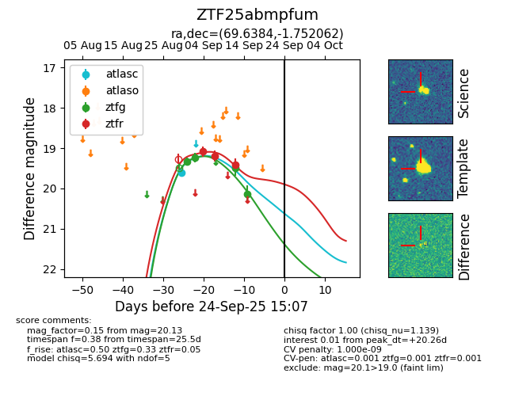
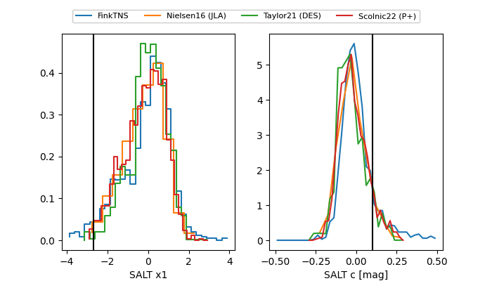

FINK: ZTF25abmpfum
Lasair: ZTF25abmpfum
ALeRCE: ZTF25abmpfum
ZTF25abmpfum (ztf,fink)
equatorial (ra, dec) = (69.6384,-1.75206)
galactic (l, b) = (198.0316,-30.08685)


last atlasc=19.62, ztfg=20.13, ztfr=19.41
1 atlasc, 4 ztfg, 3 ztfr detections